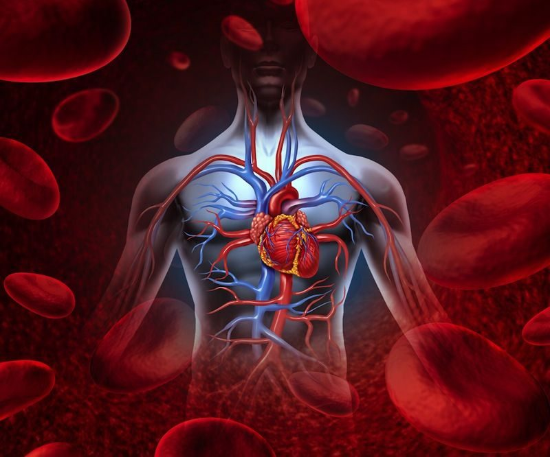

Can Reflexology Improve Blood Circulation

Introduction
Good blood circulation is essential for overall health, ensuring that oxygen and nutrients are delivered to the body’s tissues while removing toxins and waste. Poor circulation can lead to a range of health issues, including fatigue, swelling, and cardiovascular problems. While medications and lifestyle changes can help, many people turn to holistic therapies like reflexology. But can reflexology truly improve blood circulation? Let’s explore the science, techniques, and benefits behind this ancient practice.
Understanding Blood Circulation and Its Importance
Blood circulation is the continuous movement of blood through the heart, arteries, veins, and capillaries. It is vital for:
- Oxygen and Nutrient Delivery: Ensuring that all cells receive essential nutrients and oxygen.
- Waste Removal: Helping the body remove toxins and metabolic waste.
- Regulating Body Temperature: Maintaining optimal body function through heat distribution.
- Supporting Organ Function: Ensuring the proper operation of vital organs like the brain and heart.
Common Causes of Poor Circulation
- Sedentary Lifestyle: Lack of movement reduces blood flow.
- Obesity: Excess weight puts strain on the circulatory system.
- Smoking: Damages blood vessels and restricts circulation.
- Diabetes: Can lead to circulation problems and nerve damage.
- Hypertension: High blood pressure affects blood flow efficiency.
- Stress and Anxiety: Can lead to constricted blood vessels, reducing circulation.
What Is Reflexology?
Reflexology is a complementary therapy that involves applying pressure to specific reflex points on the feet, hands, and ears. These points correspond to different organs and systems in the body. By stimulating these areas, reflexologists aim to improve circulation, reduce stress, and promote overall well-being.
Key Reflex Points for Improving Blood Circulation
Certain reflex points are believed to play a crucial role in enhancing circulation and improving cardiovascular health.
- Heart Reflex (Feet and Hands)
Location: The ball of the foot and the center of the palm. How It Helps: Stimulating this area promotes heart function and supports circulation. How to Apply Pressure: Use firm circular motions for 2-3 minutes on each side.
- Liver Reflex (Feet and Hands)
Location: The arch of the foot and the fleshy area between the thumb and index finger. How It Helps: The liver plays a vital role in blood detoxification and circulation. How to Apply Pressure: Apply steady pressure for 1-2 minutes and massage gently.
- Kidney Reflex (Feet and Hands)
Location: Just above the heel, in the center of the foot. How It Helps: The kidneys help filter the blood and regulate fluid balance. How to Apply Pressure: Apply moderate pressure for 30-60 seconds, then release.
- Leg Circulation Reflex (Feet)
Location: The outer edge of the foot, near the heel. How It Helps: Helps improve circulation in the legs and reduce swelling. How to Apply Pressure: Massage in an upward motion for better blood flow.
- Spleen Reflex (Feet and Hands)
Location: The left foot, slightly below the ball of the foot. How It Helps: The spleen plays a role in blood purification and immune function. How to Apply Pressure: Use gentle circular motions for 1-2 minutes.
Reflexology Techniques for Enhancing Circulation
Using the right reflexology techniques can maximize benefits for blood circulation.
- Thumb Walking
This technique involves applying steady, controlled pressure along reflex points using a walking motion with the thumb.
- Circular Massage
Using circular movements with the thumb or fingers helps stimulate nerve endings and blood flow.
- Sustained Pressure
Holding pressure on a reflex point for 30-60 seconds before releasing can promote relaxation and improved circulation.
- Foot Rolling with a Reflexology Ball
Rolling the feet over a reflexology ball can enhance circulation and relieve tension.
Scientific Evidence Supporting Reflexology for Circulation Improvement
While reflexology is not a medical cure, studies suggest that it may help improve circulation and overall well-being.
- A 2014 Study in the Journal of Circulatory Health found that reflexology increased peripheral blood circulation in participants with poor circulation.
- A 2017 Review Published in Complementary Therapies in Clinical Practice highlighted reflexology’s ability to reduce stress, which contributes to better circulation.
- A 2020 Study in the Journal of Alternative Medicine suggested that reflexology improved cardiovascular function and blood flow in individuals with hypertension.
How to Incorporate Reflexology into Your Routine
To make reflexology an effective part of your circulation improvement strategy, consistency is key.
- Daily Self-Reflexology: Spend at least 5-10 minutes massaging key reflex points.
- Professional Sessions: Consider visiting a trained reflexologist for deeper relief.
- Pair with Movement: Regular exercise and stretching can enhance the effects of reflexology.
- Stay Hydrated: Drinking plenty of water supports healthy circulation.
- Maintain a Balanced Diet: Eating nutrient-rich foods helps keep blood vessels healthy.
Additional Natural Remedies to Support Circulation
While reflexology can be a powerful tool, combining it with other natural remedies can further enhance circulation.
- Hydration
Drinking sufficient water helps keep blood viscosity at an optimal level, improving circulation.
- Herbal Teas
Ginger, green tea, and ginkgo biloba are known for their circulation-boosting properties.
- Exercise and Stretching
Activities like yoga, brisk walking, and stretching exercises encourage better circulation.
- Massage Therapy
Regular massages help improve circulation and relieve muscle tension.
Conclusion: Can Reflexology Improve Blood Circulation?
Reflexology offers a natural, non-invasive approach to enhancing blood circulation. By stimulating key reflex points, it helps promote relaxation, improve cardiovascular function, and support overall well-being. While reflexology may not replace medical treatments, it serves as an excellent complementary therapy for those seeking holistic health improvements.